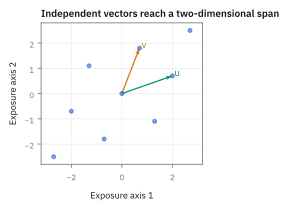
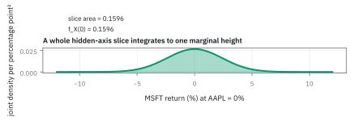
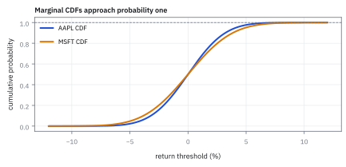

6.2 Marginal Distributions
จากการมองภาพรวมสองมิติ สู่การรวมผลกระทบเพื่อแยกดูสินทรัพย์รายตัว
ตารางออเดอร์บอกว่ากาแฟคู่ครัวซองต์ 30% และกาแฟคู่แซนด์วิช 20% ถ้าถามแค่ว่า ‘สั่งกาแฟไหม’ คุณจะเก็บคอลัมน์ขนมไว้ทำไม?
เฉลย: ไม่ต้องเก็บ บวกสองช่องที่มีกาแฟได้ 30% + 20% = 50% คือโอกาสที่ลูกค้าสั่งกาแฟ ไม่ว่าจะคู่กับขนมอะไร ข้อมูลเรื่องขนมยังอยู่ในตารางเดิม แค่คำถามนี้ไม่ต้องใช้มัน
Marginal distribution คือ distribution ของตัวแปรหนึ่งที่ได้จากการรวมทุกค่าของตัวแปรอื่น ใช้ดึงภาพของสิ่งเดียวออกจากข้อมูลร่วมหลายมิติ
ศัพท์ที่ใช้ในหัวข้อนี้
- marginal distribution
- marginal distribution คือรูปแบบโอกาสของ Random Variable ตัวเดียว ที่ได้จากการบวกหรืออินทิเกรตตัวแปรอื่นออกไป
- marginal probability density function (PDF)
- marginal density function บอก density ของตัวแปรเดียว คำนวณโดยอินทิเกรต joint PDF ตลอดแกนของตัวแปรอื่น
- marginal cumulative distribution function (CDF)
- marginal CDF บอก cumulative probability ของตัวแปรเดียว ใช้หาโอกาสที่ค่าไม่เกินเกณฑ์
- joint distribution
- distribution ของตัวแปรหลายตัวที่เกิดร่วมกัน ใช้เป็นต้นทางก่อนสกัด marginal distribution
- AAPL (Apple Inc.)
- หุ้นบริษัท Apple ในตลาดสหรัฐฯ ใช้เป็นตัวแปรที่ต้องการสกัด distribution เดี่ยวออกมา ($X$)
- MSFT (Microsoft Corp.)
- หุ้นบริษัท Microsoft ในตลาดสหรัฐฯ ใช้เป็นตัวแปรแวดล้อมที่จะถูกอินทิเกรตออกไป ($Y$)
- support
- บริเวณที่ density ไม่เป็นศูนย์ ใช้บอกขอบเขตของการอินทิเกรตจริง ซึ่งต้องอ่านจากบริเวณที่นิยามไว้
- skewed
- ลักษณะของ distribution ที่ไม่สมมาตรซ้ายขวา ใช้บอกความเอียงหรือน้ำหนักของโอกาสที่เทไปข้างใดข้างหนึ่ง
สัญลักษณ์ที่ใช้ในหัวข้อนี้
| สัญลักษณ์ | ความหมาย | หน่วย |
|---|---|---|
| $X,Y$ | daily return ของ AAPL และ MSFT ในรูปทศนิยม | decimal return/day |
| $f_{X,Y}$ | joint PDF ของ $X$ และ $Y$ | 1/(return²) |
| $f_X,f_Y$ | marginal PDF ของแต่ละตัวแปร | 1/return |
| $F_X,F_Y$ | marginal CDF ของแต่ละตัวแปร | probability (0 ถึง 1) |
| $u,v$ | ตัวแปรหุ่นสำหรับอินทิเกรตในแกน return | decimal return/day |
ที่มาที่ไป: มีภาพรวมแล้ว แต่บางทีอยากดูตัวเดียว
เมื่อสร้างภาพของสองสิ่งพร้อมกันได้แล้ว ปัญหาถัดมาคือบางครั้งเราต้องรายงานทีละตัว เช่นฝ่ายกำกับขอความเสี่ยงของสินทรัพย์แต่ละประเภทแยกกัน
คำถามคือจะดึงภาพของตัวเดียวออกมาจากภาพรวมได้อย่างไร โดยไม่ต้องเริ่มคำนวณใหม่ทั้งหมด
วิธีที่ได้ผลคือรวมแกนที่ไม่สนใจทิ้งไปให้หมด ซึ่งเท่ากับการบอกว่ายอมรับทุกค่าของตัวนั้น
แต่มีราคาที่ต้องจ่าย และเป็นราคาที่คนมักลืม คือความสัมพันธ์ระหว่างสองตัวหายไปหมดในกระบวนการนี้ ผลรวมของความเสี่ยงรายตัวจึงไม่เท่ากับความเสี่ยงของพอร์ต และมักสูงกว่ามาก
คำถามที่เรากำลังตอบ: ดึง distribution ของหุ้นตัวเดียวออกจาก model ร่วมได้อย่างไร?
ในระบบบริหารความเสี่ยง ข้อมูลมักถูกจำลองเป็น joint PDF สองมิติระหว่าง AAPL ($X$) และ MSFT ($Y$) แต่เมื่อผู้จัดการกองทุนต้องการดูความเสี่ยงของ AAPL เพียงตัวเดียว เราต้องรวมความเป็นไปได้ทุกอย่างของ MSFT ออกไป กระบวนการนี้เรียกว่า marginalization ซึ่งไม่ใช่การตัดดูเสี้ยวใดเสี้ยวหนึ่ง แต่คือการกวาดรวมทุกค่าบนอีกแกนหนึ่งอย่างสมบูรณ์
ภูมิหลังทางประวัติศาสตร์: ที่มาของชื่อ marginal จากขอบกระดาษสู่ projection
ชื่อของ marginal distribution ในทางสถิติมีที่มาจากการบันทึกตารางความถี่แบบสองมิติ (contingency table) ลงบนกระดาษในศตวรรษที่ 19 โดยนักสถิติยุคบุกเบิกอย่าง Francis Galton และ Karl Pearson
เมื่อต้องการทราบผลรวมของตัวแปรใดตัวแปรหนึ่งโดยไม่สนใจอีกตัวแปร พวกเขาจะบวกตัวเลขตามแนวนอนหรือแนวตั้ง แล้วเขียนผลลัพธ์ไว้ตรง 'ขอบริมกระดาษ' ตัวเลขตรงขอบเหล่านั้นจึงถูกเรียกว่า marginal totals และกลายมาเป็นชื่อ marginal distribution ในวิชาความน่าจะเป็น
ในคณิตศาสตร์สมัยใหม่ กระบวนการนี้เทียบเท่ากับ projection หรือการฉายภาพความน่าจะเป็นจาก space หลายมิติลงมาสู่แกนมิติเดียว ในงานบริหารความเสี่ยง ผู้จัดการพอร์ตต้องยุบ joint risk ของระบบลงมาเป็น marginal risk เพื่อกำหนดกรอบความเสียหายของสินทรัพย์แต่ละตัว
ตารางร่วมหกช่อง: joint probability ของ AAPL กับ MSFT ในหนึ่งวัน
| $X$ (AAPL) ลง \ $Y$ (MSFT) → | up | down | รวมแถว = marginal ของ $X$ |
|---|---|---|---|
| $-2\%$ | 0.05 | 0.15 | 0.20 |
| $0\%$ | 0.30 | 0.20 | 0.50 |
| $+2\%$ | 0.25 | 0.05 | 0.30 |
| รวมคอลัมน์ = marginal ของ $Y$ | 0.60 | 0.40 | 1.00 |
ตัวเลขในหกช่องคือ joint probability (รวมกันได้ 1.00) ช่องรวมทางขวาและด้านล่างยังไม่มี เราจะสร้างมันเองในขั้นถัดไป ตารางนี้จะถูกใช้ต่อในหัวข้อ 6.3 และ 6.4
ขั้นที่ 1 — สร้าง marginal ด้วยมือ: บวกทั้งแถว หรือบวกทั้งคอลัมน์
ยังไม่ต้องใช้ integral ตารางหกช่องข้างบนตอบได้ด้วยการบวก: ถ้าถามแค่ AAPL ให้บวกทั้งแถวโดยไม่สนว่า MSFT ทำอะไร
แถว $-2\%$ มีสองช่อง (MSFT up กับ down) บวกกันได้ 0.20 นั่นคือโอกาสที่ AAPL ลง 2% *ไม่ว่า* MSFT จะเป็นอย่างไร ทำครบสามแถวได้ marginal ของ $X$ ทำครบสองคอลัมน์ได้ marginal ของ $Y$
ทั้งสองชุดรวมได้ 1 พอดี ถ้าไม่ได้ 1 แปลว่าบวกตกช่อง ‘รวมทิ้ง’ ตรงนี้คือคำว่า integrate ในสูตรต่อเนื่องข้างล่าง แค่เปลี่ยนจากบวกช่องเป็นรวมพื้นที่
ขั้นที่ 2 — คำนวณ marginal PDF ออกมาจาก joint: อินทิเกรตอีกแกนทิ้ง
บางทีเรามีภาพสองตัวแต่อยากดูตัวเดียว สูตรที่ได้ดูเหมือนกฎที่ต้องท่อง แต่สี่บรรทัดนี้แสดงว่ามันเป็นแค่การเขียนคำถามใหม่ แล้วหา derivative หนึ่งครั้ง ผลนี้ถูกใช้ซ้ำทุกครั้งที่หัวข้อ 6.5 ยุบ integral สองชั้นให้เหลือชั้นเดียว
ถ้าอยากรู้เรื่อง $X$ อย่างเดียว ก็แค่ถามถึง $X$ โดยปล่อยให้ $Y$ เป็นอะไรก็ได้ สองประโยคนี้ถามเรื่องเดียวกัน บรรทัดสองจึงใช้นิยามของขั้นที่ 1 โดยเลือกบริเวณเป็นแถบยาวที่กว้างสุดตามแกน $Y$
จากนั้นใช้ความสัมพันธ์จากหัวข้อ 1.8 ว่า density คือ derivative ของ CDF การหา derivative เทียบขอบบนของ integral ให้ตัวที่อยู่ข้างในกลับมาตรง ๆ ขอบบนคือ $x$ จึงเหลือ integral ตามแกน $v$ เพียงชั้นเดียว อ่านผลได้ว่าการรวมอีกแกนทิ้งให้หมด แปลว่ายอมรับทุกค่าของตัวที่ไม่สนใจ
ขั้นที่ 3 — นิยามของ marginal CDF: สะสม marginal density จนถึงเกณฑ์
เมื่อได้ภาพตัวเดียวแล้ว ก็กลับไปใช้ นิยาม เดิมของหัวข้อ 1.8 ได้ทั้งหมด ไม่มีอะไรใหม่ในบรรทัดนี้ นอกจากการยืนยันว่าเครื่องมือของบทที่หนึ่งยังใช้ได้
สะสม density $f_X(u)$ จากลบอนันต์จนถึง threshold $x$ ได้ค่า marginal CDF ซึ่งเป็นความน่าจะเป็นจริงที่ $X \le x$ โดยไม่ต้องสนใจว่า $Y$ จะมีค่าเท่าใด
ขั้นที่ 4 — ตรวจสอบผลรวมความน่าจะเป็น (normalization check)
ตรวจว่ารวมแล้วได้หนึ่ง ด้วยการกระจาย marginal density กลับเป็น integral สองชั้นของ joint density ทั่วทั้งระนาบ
เมื่อแทนนิยามของ marginal density เข้าไป integral ชั้นเดียวจะกลายเป็น integral สองชั้นครอบคลุมพื้นที่ทั้งหมดของระนาบ
การรวมปริมาตรใต้ผิว joint density ทั่วทั้งระนาบสองมิติ ก็คือค่าของ joint CDF ที่จุดอนันต์ทั้งสองแกน
ปริมาตรรวมของทั้ง sample space ต้องเท่ากับ $1.00$ พอดีเสมอ หากคำนวณแล้วไม่ได้หนึ่ง แสดงว่าสูตรหรือขอบเขตมีความผิดพลาด
ขั้นที่ 5 — เทียบกับกรณีตัวแปรแบบไม่ต่อเนื่อง (discrete case)
กรณีนับได้ใช้การบวกแทนการรวมต่อเนื่อง แต่เหตุผลเหมือนกันทุกอย่าง คือหั่นเป็นกองที่ไม่ทับกันแล้วบวก นี่คือเหตุผลว่าทำไมตัวเลขขอบตารางถึงเรียกว่า marginal
ถ้า $X$ ออกมาเป็น $x$ แล้ว $Y$ ต้องออกมาเป็นค่าใดค่าหนึ่งเสมอ วันที่ AAPL ลง 2% จึงหั่นเป็นวันที่ MSFT ขึ้นกับวันที่ MSFT ลงได้ครบ และวันหนึ่งเป็นได้แค่แบบเดียว พอไม่ทับกันก็บวกโอกาสได้ตรง ๆ ตามหัวข้อ 1.2
บรรทัดสุดท้ายเดินจริงกับตารางข้างบน ช่อง $Y$ ขึ้นได้ 0.05 และช่อง $Y$ ลงได้ 0.15 บวกกันได้ 0.20 ตรงกับตัวเลขขอบตาราง นั่นคือเหตุผลที่ตัวเลขขอบตารางถูกเรียกว่า marginal
ขั้นที่ 6 — ขยายสู่ joint marginal ของกลุ่มตัวแปร (vector partition)
ในพอร์ตโฟลิโอขนาดใหญ่ เรามักแบ่งสินทรัพย์ออกเป็นกลุ่ม เช่น หุ้นเทคโนโลยีกับตราสารหนี้ การหา joint marginal distribution ของกลุ่มย่อยช่วยให้วิเคราะห์ความเสี่ยงเฉพาะกลุ่มได้โดยไม่ต้องละทิ้งโครงสร้างร่วม
สำหรับพอร์ต $n$ ตัว marginal CDF ของตัวที่ $i$ ได้จากการใส่อนันต์แทนขอบของตัวอื่นทุกตัว เพราะเงื่อนไขว่าตัวอื่นไม่เกินอนันต์เป็นจริงเสมอ จึงเหลือแค่เงื่อนไขของตัวที่ $i$ เหมือนบวกทั้งแถวในขั้นที่ 1
เมื่อแบ่ง vector ออกเป็นสองกลุ่ม $X_1$ ขนาด $k$ มิติ และ $X_2$ ขนาด $n-k$ มิติ เราหา joint marginal density ของกลุ่มแรกได้ด้วยการยุบตัวแปรในกลุ่มหลังทิ้งผ่าน integral $n-k$ ชั้น
ผลลัพธ์ที่ได้ยังคงเป็น joint distribution ที่สมบูรณ์ของกลุ่มย่อย $k$ ตัว โดยรักษาความสัมพันธ์ภายในกลุ่มไว้ครบถ้วน
ขั้นที่ 7 — ตัวอย่างต่อเนื่องที่ต้องอินทิเกรตจริง: ขอบเขตไม่คงที่
density ก้อนนี้เป็นของเล่นที่เลือกมาให้อินทิเกรตด้วยมือได้ ไม่ใช่ model ราคาจริง แต่ขอบเขตของมันคือของจริง: $Y$ ถูกบังคับให้ไม่เกิน $X$ เหมือนขายที่ผูกกันด้วยข้อจำกัด
เพราะขอบเขตผูกกัน ขีดจำกัดของการอินทิเกรตจึงไม่ใช่ตัวเลขคงที่ แต่เป็นตัวแปรอีกตัวหนึ่ง นี่คือจุดที่คนส่วนใหญ่พลาด
พื้นที่ที่ density ไม่เป็นศูนย์คือสามเหลี่ยมมุม $(0,0)$ กับ $(1,0)$ กับ $(1,1)$ ซึ่งมีพื้นที่ครึ่งหนึ่ง คูณกับความสูง $2$ จึงได้พื้นที่ใต้ density รวมเป็น $1$ พอดี
หา marginal ของ $X$ ให้อินทิเกรตตามแกน $y$ แต่ $y$ วิ่งได้แค่จาก $0$ ถึง $x$ ไม่ใช่ถึง $1$ เพราะนอกช่วงนั้น density เป็นศูนย์ ขีดบนจึงเป็น $x$ แล้วผลลัพธ์ยังติด $x$ อยู่
หา marginal ของ $Y$ กลับทาง: $x$ วิ่งได้จาก $y$ ถึง $1$ เพราะเงื่อนไข $y\le x$ ยังบังคับอยู่ ขีดล่างจึงเป็น $y$ สองกรณีนี้คือเทคนิคเดียวกัน สลับบทบาทของตัวแปรเท่านั้น
สองบรรทัดสุดท้ายคือการตรวจว่าอินทิเกรตไม่พลาด: marginal แต่ละตัวต้องรวมได้ $1$ ถ้าขีดจำกัดผิด ตัวเลขนี้จะไม่เป็น $1$ และเป็นสัญญาณแรกว่าตั้งขอบเขตผิด
ขั้นที่ 8 — อ่านค่าเฉลี่ยจาก marginal: ความไม่สมมาตรที่ joint ไม่ได้บอก
joint density มีค่าเท่ากันคือ $2$ ทุกจุดบนบริเวณ ถ้ามองแค่ตัว density จะรู้สึกว่าทุกอย่างสมมาตร แต่ marginal ทั้งสองตัวไม่สมมาตรเลย
สาเหตุไม่ได้อยู่ที่ค่าของ density แต่อยู่ที่รูปร่างของบริเวณ นี่คือบทเรียนที่โอนไปใช้กับพอร์ตได้ตรง ๆ
ค่าเฉลี่ยของ $X$ ได้จากการคูณ $x$ เข้ากับ marginal แล้วอินทิเกรต ได้ $2/3$ ส่วนของ $Y$ ได้ $1/3$ ตัวหนึ่งเป็นสองเท่าของอีกตัว
เหตุผลไม่ใช่เพราะ density เอนไปทางใด แต่อยู่ที่บริเวณอนุญาตให้ $X$ ขึ้นสูงได้ถึง $1$ ขณะที่ $Y$ ถูกบังคับด้วยเงื่อนไข $y\le x$ ให้อยู่ต่ำกว่าเสมอ ขอบเขตจึงสร้างความไม่สมมาตรขึ้นมาเอง
การบวกกันได้ $1$ เป็นการตรวจที่รวดเร็ว: ในบริเวณสามเหลี่ยมนี้ค่าเฉลี่ยสองตัวต้องรวมกันได้หนึ่ง ถ้าไม่ได้ แปลว่าอินทิเกรตขอบเขตใดขอบเขตหนึ่งผิด
แปลว่าอะไร: ถ้าสองขาของการเทรดผูกกันด้วยข้อจำกัด ความเสี่ยงของขาเดียวที่อ่านจาก marginal จะไม่สมมาตร แม้ joint จะดูเรียบ และการอ่าน marginal จึงไม่ใช่การทิ้งข้อมูล แต่เป็นการตอบคำถามที่ต่างออกไป
แล้วเอาไปใช้ทำอะไรได้จริงบ้าง
การรวมมิติที่ไม่สนใจทิ้ง ทำให้กลับมาใช้เครื่องมือง่าย ๆ ของบทที่หนึ่งได้
ใช้ดึงความเสี่ยงของสินทรัพย์ตัวเดียวออกมาจากภาพรวมของพอร์ตทั้งกอง เพื่อรายงานความเสี่ยงรายตัวให้ผู้ถือหุ้นหรือฝ่ายกำกับ
ใช้ตรวจว่าแบบจำลองร่วมที่สร้างขึ้นสมเหตุสมผล โดยดูว่าเมื่อรวมมิติอื่นทิ้งแล้ว ตัวที่เหลือหน้าตาตรงกับข้อมูลจริงหรือไม่
ใช้เตรียมข้อมูลก่อนคำนวณ Value at Risk ของแต่ละสายธุรกิจแยกกัน
Figure 6.2a — การยุบรวม density ลงบนแกน AAPL

เส้นสีแดงด้านล่างแสดงรูปทรงของ AAPL marginal PDF ซึ่งเกิดจากการรวมพื้นที่ของ joint PDF ตามแนวตั้ง (แกน MSFT) ทุกค่าเข้าด้วยกัน ไม่ใช่การเลือกลายเส้นที่จุดใดจุดหนึ่งตามใจชอบ
Figure 6.2b — กราฟ marginal PDF ของทั้งสองสินทรัพย์

เมื่ออินทิเกรตแยกแต่ละแกน จะได้ marginal distribution หนึ่งมิติของทั้งสองหุ้น พื้นที่ใต้เส้นแต่ละเส้นมีค่าเท่ากับ 1 พอดี โดยแกนตั้งคือ density ต่อหนึ่งหน่วยเปอร์เซ็นต์ผลตอบแทน
Figure 6.2c — พื้นที่ใต้รอยตัดคือความสูงของ marginal distribution

เมื่อตรึงผลตอบแทน AAPL ไว้ที่ $0\%$ แล้วอินทิเกรตพื้นที่ใต้แผ่นตัดตามแกน MSFT พื้นที่ที่ได้ $0.1596$ จะเท่ากับค่าความสูงของ marginal PDF $f_X(0)$ พอดิบพอดี
Figure 6.2d — การตรวจสอบค่า marginal CDF ต้องลู่เข้าสู่หนึ่ง

เส้นสะสม marginal CDF ของทั้งสองสินทรัพย์ต้องเพิ่มขึ้นอย่างต่อเนื่องจาก 0 สู่ 1 เมื่อค่า threshold วิ่งไปทางขวา หากเส้นไม่เข้าใกล้ 1 แสดงว่าสูตรหรือข้อมูลมีความผิดพลาด
Worked Example — โจทย์จิ๋วที่คำนวณได้
โจทย์ให้อะไรมาบ้าง: จากตารางร่วม วันที่ AAPL ลง 2% แบ่งเป็น MSFT ขึ้น 5% ของวันทั้งหมด และ MSFT ลง 15% ของวันทั้งหมด. ต้องหาโอกาสของ AAPL โดยไม่สนใจ MSFT.
คำตอบ: marginal probability เท่ากับ $0.05+0.15=0.20$ หรือ 20%.
ตรวจเองใน 10 วินาที: ใน Excel ใส่ =0.05+0.15 ต้องได้ 0.20 และผลรวมของทุก marginal outcome ต้องได้ 1.
แปลว่าอะไร: เมื่อตัดสินความเสี่ยงของ AAPL ตัวเดียว ให้รวมทุกสภาพของ MSFT ไม่ใช่เลือกเฉพาะช่องที่เห็นเด่น. กับดักคือรวมไม่ครบแกนแล้วได้ probability ต่ำเกินจริง.
ตัวอย่างที่สอง — คำตอบและวิธีเช็ก
คำตอบ: density คงที่ $2$ บนสามเหลี่ยมให้ marginal สองรูปที่ต่างกัน พร้อมค่าเฉลี่ยที่ไม่เท่ากัน คือสองในสามกับหนึ่งในสาม
ตรวจเองใน 10 วินาที: อินทิเกรต marginal ทั้งสองตัวในช่วงที่เป็นบวก ต้องได้ $1$ ทั้งคู่ และผลบวกของค่าเฉลี่ยทั้งสองต้องเท่ากับ $1$
ใช้ตัดสินใจ: เวลาอ่านความเสี่ยงของขาเดียวจากแบบจำลองสองตัว ให้ตรวจว่าขอบเขตของแบบจำลองผูกตัวแปรไว้หรือไม่ เพราะถ้าผูก marginal จะไม่สมมาตรและตัวเลข quantile ที่อ่านได้จะเอนไปข้างหนึ่ง
กับดักที่พบบ่อย: สับสนระหว่างแผ่นตัด (slice) กับการหา marginal
ลองหยิบแค่คอลัมน์ MSFT ลงในตารางหกช่อง แล้วอ่านว่า AAPL ลง 2% ได้ 0.15 ซึ่งไม่ใช่ marginal 0.20 และสามช่องในคอลัมน์นั้นรวมกันได้แค่ 0.40 ไม่ใช่ 1 แผ่นตัดแบบนี้ยังไม่ใช่ marginal ต้องรวมทุกคอลัมน์ ถ้าจะใช้แผ่นตัด ต้องหาร 0.40 ก่อน จึงเป็น conditional ของหัวข้อ 6.3
ข้อจำกัด: วิธีนี้สมมติอะไร และของจริงเป็นอย่างไร
| เรื่อง | วิธีนี้สมมติว่า | ของจริงเป็นอย่างไร | ผลที่ตามมาเวลาใช้งาน |
|---|---|---|---|
| สิ่งที่หายไป | การรวมทิ้งไม่ทำให้เสียข้อมูลที่ต้องการ | ความสัมพันธ์ระหว่างตัวหายไปหมด | ผลรวมของความเสี่ยงรายตัวไม่เท่ากับความเสี่ยงของพอร์ต และมักสูงกว่ามาก |
| การตีความ | ตัวเลขรายตัวใช้ตัดสินใจได้ | การลดสถานะตัวหนึ่งกระทบตัวอื่นด้วย | การมองรายตัวอย่างเดียวนำไปสู่การตัดสินใจที่แย่ในระดับพอร์ต |
| ความครบ | รวมทุกกรณีแล้ว | ต้องกำหนดขอบเขตการรวมให้ถูก | การกำหนดขอบผิดทำให้โอกาสรวมไม่ได้หนึ่ง ซึ่งเป็นสัญญาณว่าคำนวณผิด |
แถวแรกคือเหตุผลที่รายงานความเสี่ยงต้องมีทั้งแบบรายตัวและแบบรวม ไม่ใช่อย่างใดอย่างหนึ่ง
สรุปที่ใช้ได้จริง
- marginal PDF ได้จากการอินทิเกรต joint PDF ตลอดทั้งแกนของ random variable ตัวอื่นออกไป
- marginal CDF ใช้ตอบคำถามความเสี่ยงและหาควอนไทล์ของสินทรัพย์เดี่ยวโดยไม่ต้องกำหนดเงื่อนไขสินทรัพย์อื่น
- พื้นที่ใต้กราฟ marginal PDF ของแต่ละตัวแปรต้องรวมกันได้เท่ากับ 1 เสมอ
- ภาพตัดขวางที่จุดใดจุดหนึ่ง (slice) ไม่ใช่ marginal จนกว่าจะผ่านการรวมทุกกรณีของอีกแกนหนึ่ง
- ขีดจำกัดของการอินทิเกรตอ่านมาจาก support ไม่ใช่จากสูตร: เมื่อตัวแปรถูกผูกด้วยข้อจำกัด ขีดบนหรือขีดล่างจะเป็นตัวแปรอีกตัวหนึ่ง
- joint density ที่เรียบยังให้ marginal ที่ไม่สมมาตรได้ ถ้าบริเวณที่อนุญาตไม่สมมาตร